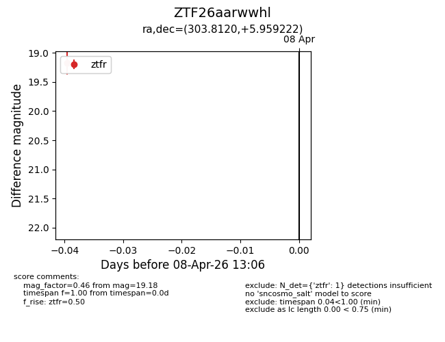
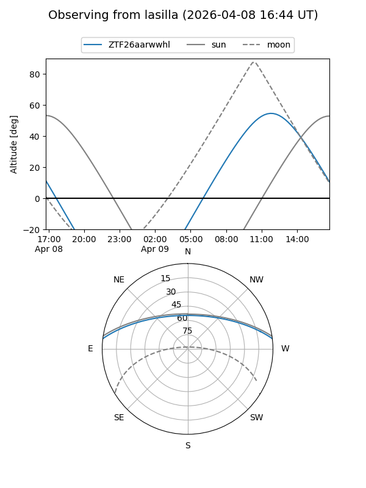
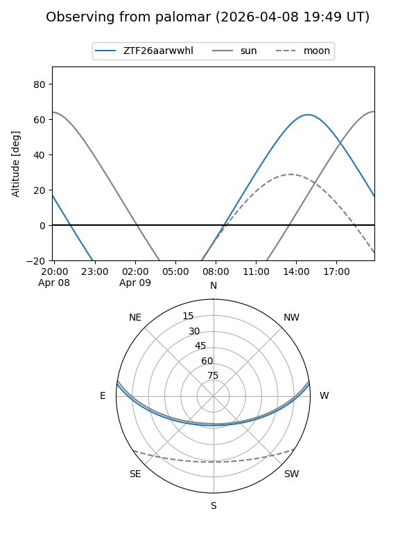

ZTF26aarwwhl
Target ZTF26aarwwhl at 2026-04-08 13:11
Aliases and brokers:
FINK: link
Lasair: link
ALeRCE: link
alt names
ZTF26aarwwhl (ztf,fink_ztf)
Coordinates:
equatorial (ra, dec) = 303.8120,+5.95922
equatorial (HMS+DMS) = 20:15:14.89,+05:57:33.20
galactic (l, b) = (48.2593,-15.61636)
Flags:
Photometry:
last ztfr=19.18
1 ztfr detections
Lightcurve

Visibility


Additional plots